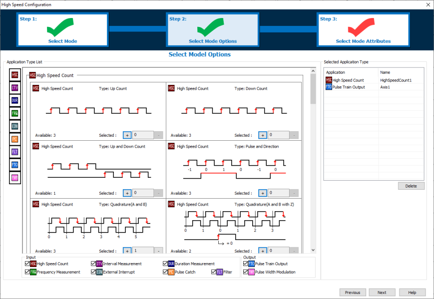
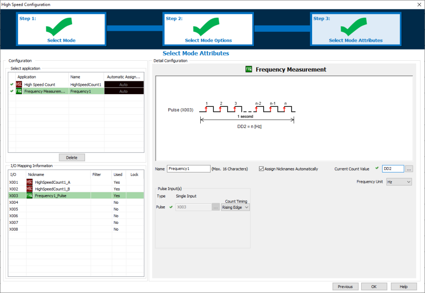

Topic: CL277

| High Speed Configuration |
Topic: CL277
|
The High Speed Configuration for CLICK PLUS CPUs is different than the C0-1x CPUs and automatically assigns Inputs and Outputs. This provides the maximum amount of flexibility to the available High-Speed capable Inputs and Outputs. For C0-1x CPUs see Help topic CL221.
|
|
Note: Projects converted from C0-1x to C2-x CPUs might have Inputs and Outputs reassigned. C2-x projects converted to C0-1x CPUs will lose their High Speed configuration. |
|
The following CLICK PLUS Option Slot Modules are capable of high-speed I/O. They may be installed in any CLICK PLUS CPU, but must be installed in Option Slot 0 to use their high-speed features.
| CLICK PLUS High-Speed I/O Compatibility | ||
| Option Slot Module | High-Speed Inputs | High-Speed Outputs |
| C2-14D1 | 8 | 3 |
| C2-14D2 | 8 | 3 |
| C2-14DR | 8 | 0 |
| C2-14TTL | 8 | 3 |
| C2-08D1-4VC | 4 | 2 |
| C2-08D2-4VC | 4 | 2 |
| C2-08DR-4VC | 4 | 0 |
| C2-08D1-6C | 4 | 2 |
| C2-08D2-6C | 4 | 2 |
| C2-08DR-6C | 4 | 0 |
| C2-08D1-6V | 4 | 2 |
| C2-08D2-6V | 4 | 2 |
| C2-08DR-6V | 4 | 0 |
The following, 3-Step configuration process guides the user through each decision making process.
Step 1: Select each general High-Speed Mode that the design requires.
Step 2: Select how many of each specific mode.
Step 3: Select the Attributes and Register Addresses for each specific mode.

In Step 1 enable the check boxes of each feature that your project requires. This will narrow down the available options found in Step 2.
1 High-Speed Count:Configure a Counter for: Up, Down, Up/Down, Pulse/Direction, Quadrature.
2 Interval Measurement: Configure a Timer Measurement of a Single or Dual Input Signal.
3 Duration Measurement: Configure a Timer Measurement of a Pulse Width Signal.
4 Frequency Measurement: Configure a counter for Hz or RPM.
5 External Interrupt: Configure a Discrete Input to trigger an Interrupt Program.
6 Pulse Catch: Configure a Discrete Input to see an Input Pulse that is shorter in duration than the current scan time.
7 Filter: Configure a Discrete Input to filter pulses shorter than a filter time.
8 Pulse Train Output: Configure a Motion Axis (Pulse and Direction) used by stepper or servo motor drives for motion control.
9 Pulse Width Modulation: Configure a Discrete Output to create a square wave with a known Frequency and Duty Cycle.

In Step 2 the display will update to show the available number of each Mode. These values update after each selection. The available number will depend on the Slot I/O module and which Modes have already been selected. The Modes already selected are displayed in the right side panel.

In Step 3 each Mode must be configured with the Register Addresses, and any optional attributes which are chosen. The available options are different for each Mode. The green check beside each application mode indicates a complete configuration. A red check indicates that the configuration is incomplete.
The available High-Speed Inputs and Outputs are shown in the I/O Mapping Information. If other Inputs (X101-X816) or C-bits are assigned for "Use Reset" or "Use Enable", they are not shown in the table but will get Nicknames if "Assign Nicknames Automatically" is checked.
CPU Built-in
I/O Setup: Output Tab (Basic and Standard CPU)
CPU Built-in
I/O Setup: General Tab (Basic and Standard CPU)
High Speed Count
External Interrupt
Filter Input
Pulse Catch
Interval Measurement
Duration Measurement
Frequency Measurement
Pulse Train Output
Pulse Width Modulation
Using Interrupt Programs
Example: Making the Preset Table Values Retentive